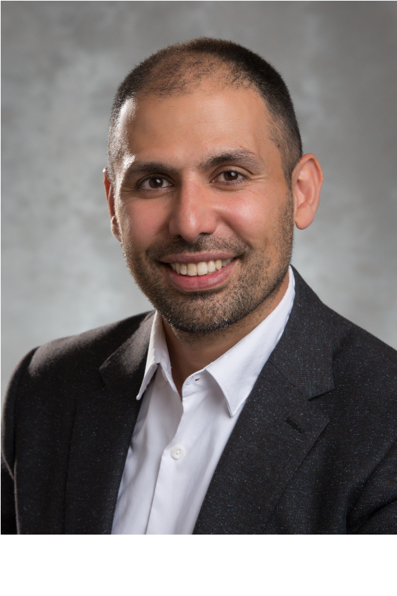

Associate Professor, Department of Management Sciences
University of Waterloo

Dr. Mehrdad Pirnia received his Ph.D. degree from the University of Waterloo in 2014 in Electrical and Computer Engineering (Power Systems Optimization). He also obtained his MASc degree in Management Sciences (Optimization Specialty). His undergraduate degree is in Industrial Engineering. The main focus of his research is on applying AI, optimization, and stochastic techniques to enhance the operation and planning of energy systems.
Currently, he is a faculty member at the University of Waterloo, Department of Management Sciences. Before joining UWaterloo, he worked full-time at the California ISO and ALSTOM Grid. He also completed an internship at the Federal Energy Regulatory Commission (FERC) during his PhD program.